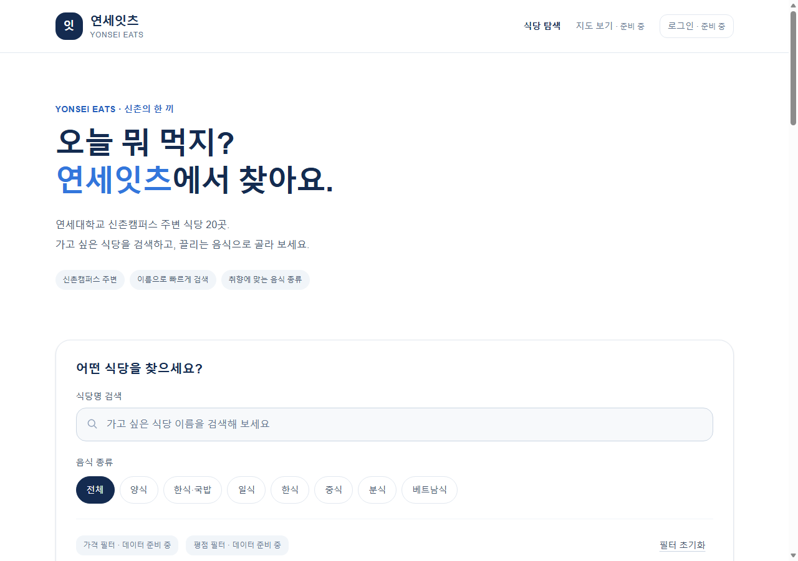
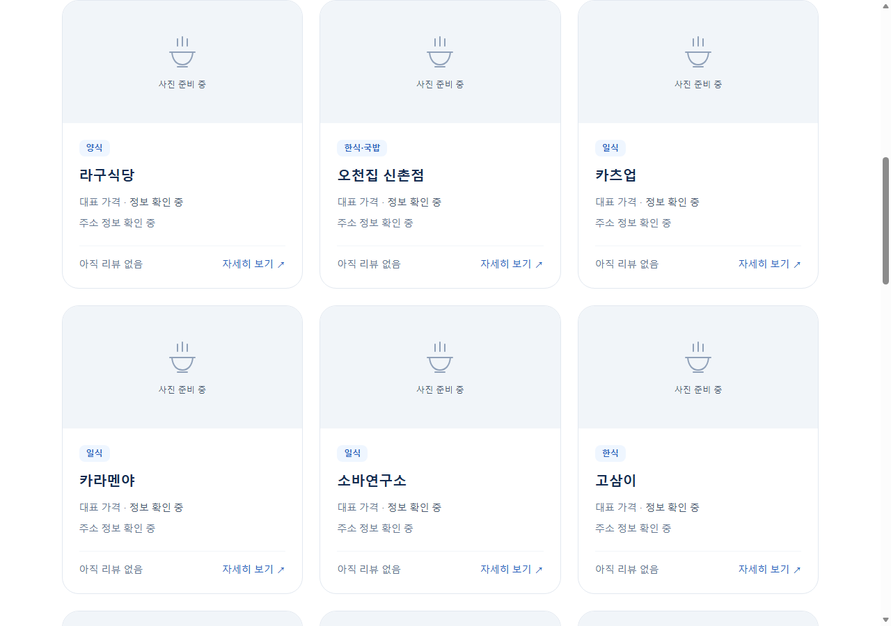
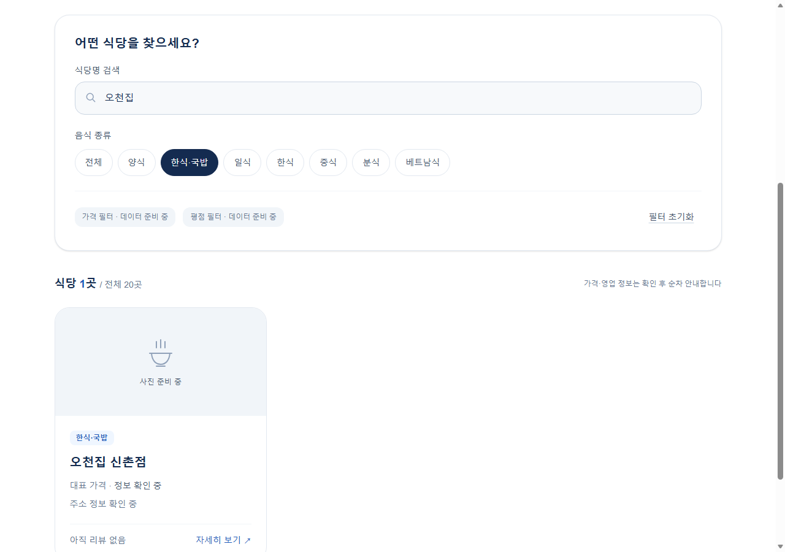
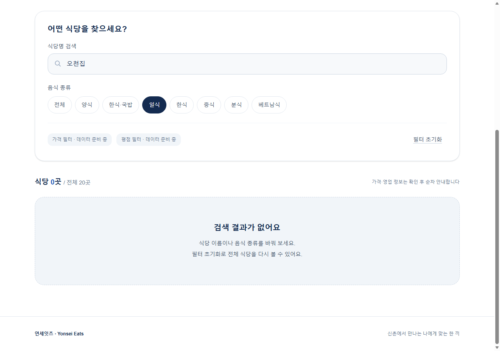
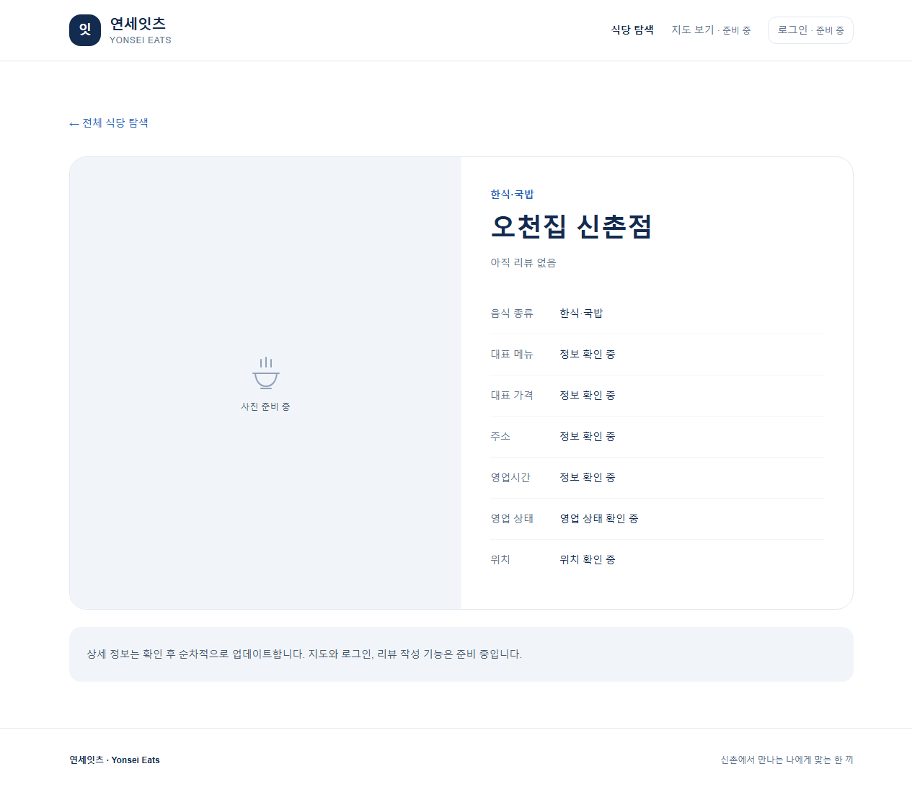
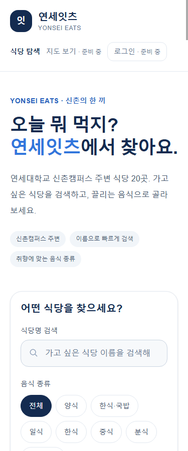
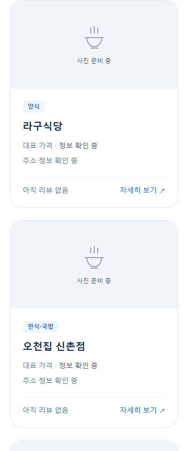
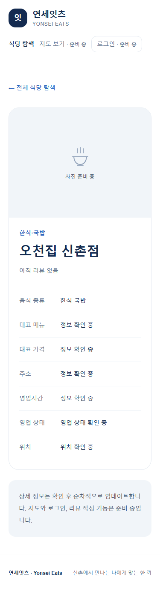

연세대학교 신촌캠퍼스 주변의 승인된 식당 20곳을 탐색할 수 있는 반응형 웹 UI를 구현했다. 기존 Next.js App Router·TypeScript·React·Tailwind CSS와 로컬 JSON 데이터를 사용했다. 이번 단계에서는 Supabase DB/Auth·NAVER Maps·실제 리뷰·즐겨찾기를 연결하지 않았다.
현재 설치 버전은 Next.js 16.4.3, React 19.3.1, Tailwind CSS 4.3.3, TypeScript 5.9.3이다. 외부 키 없이 목록·검색·기본 상세를 실행할 수 있다.
| 항목 | 구현 결과 |
|---|---|
| 메인 화면 | 연세잇츠 로고/서비스명, 소개, 검색창, 종류 필터, 카드 목록, 공통 헤더/푸터 |
| 초기 식당 | data/restaurants.json의 20곳 모두 표시. 정육면체 제외, 오천집 신촌점·더도이축산직영점 신촌점 포함 |
| 검색·필터 | 식당명 검색, 원본 7개 음식 종류 필터, AND 적용, 초기화, 결과 개수, 빈 결과 안내 |
| 상태 유지 | q/category URL 반영, 새로고침·브라우저 뒤로가기 시 조건 보존 |
| 기본 상세 | /restaurants/[id] 20개 상세 페이지, 잘못된 ID의 404 안내 |
| 반응형 | 375px에서 1열, 1280px에서 3열. 검사한 화면에서 가로 넘침 없음 |
| 미구현 기능 안내 | 지도·로그인·가격/평점 필터를 준비 중으로 표시하고 비활성화 |
| 데이터 정직성 | 미확인 값 null 보존, 정보/위치/영업 상태 확인 중, 아직 리뷰 없음, 공통 사진 플레이스홀더 |
음식 종류는 원본의 정확한 분류를 유지한다. '한식·국밥'은 '한식'과 별개 필터다. 상세의 '전체 식당 탐색' 링크는 전체 목록으로 이동하며, 필터를 유지한 복귀는 브라우저 뒤로가기로 확인했다.
| 영역 | 파일 |
|---|---|
| 페이지·레이아웃 | src/app/page.tsx, layout.tsx, globals.css, not-found.tsx, restaurants/[id]/page.tsx |
| 공통 UI | src/components/site-header.tsx, restaurant-card.tsx, restaurant-explorer.tsx |
| 데이터 계층 | src/lib/restaurants.ts |
| 테스트 | tests/restaurants.test.mjs, http-smoke.mjs, browser-smoke.mjs |
| 문서 | docs/spec.md, implementation-plan.md, phase1-plan.md, development-log.md, README.md |
| 실행 명령 | package.json의 test/test:http/test:browser 스크립트 추가 |
기존 식당 JSON·원본 v2·package-lock.json·Next/TypeScript/ESLint 설정은 보존했다. 의존성을 추가하거나 버전을 변경하지 않았다. 환경 변수의 비밀 값은 보고서와 화면에 포함하지 않는다.
아래 결과는 docs/development-log.md에 기록된 실제 실행 결과다. 이번 보고서 작성 과정에서 lint·build·typecheck·전체 테스트를 다시 실행하지는 않았다.
| 명령·검사 | 결과 |
|---|---|
| npm.cmd test | exit 0, 6건 통과/0건 실패 |
| npm.cmd run lint | exit 0, lint 오류·경고 없음 |
| npm.cmd run typecheck | exit 0, next typegen 및 tsc --noEmit 통과 |
| npm.cmd run build | exit 0, 홈 서버 렌더링 및 상세 20곳 정적 생성 |
| npm.cmd run test:http | exit 0, SSR 카드 20개·상세 20개·URL 복합 필터·잘못된 ID 404 |
| npm.cmd run test:browser | exit 0, production Edge에서 검색·종류·AND·초기화·빈 결과·상세 이동·URL 복원 검사 |
| 브라우저 화면 검사 | 375px 1열/1280px 3열, 가로 넘침 없음, 입력 포커스 확인, 수집된 실행/console 오류 0건 |
| 보존·변경 검사 | 데이터·lockfile·주요 설정 변경 없음, git diff --check 통과 |
기존 production build를 로컬 127.0.0.1:3101에서 실행하고, 별도 임시 프로필의 Edge로 실제 화면 8장을 캡처했다. 카드 20개 렌더링, 복합 검색 1건, 조건 불일치 0건, 식당 상세 표시를 확인했다. 캡처 중 수집된 브라우저 실행 오류는 0건이었다. 화면 캡처는 목업이나 AI 생성 이미지가 아니다.
실제 모바일 기기, 스크린리더·전체 키보드 탐색, Node 24, DB/RLS/OAuth/지도 테스트는 수행하지 않았다. 375px 화면은 headless 브라우저의 모바일 viewport 검사다.
| 도구·역할 | 실제 사용 |
|---|---|
| Superpowers | brainstorming으로 범위 검토, writing-plans로 구현 계획, TDD로 실패 후 구현, 검토·완료 증거 확인 |
| Context7 | Next.js·React·Tailwind 공식 문서의 resolve 3회/query 3회. 설치 Next 문서로 API 교차 확인 |
| Caveman/Cavecrew | 일반 Codex agent에 investigator·builder·reviewer 역할 지침을 부여. 네이티브 preset은 사용하지 않음 |
| 개발 검증 | Node 내장 테스트, HTTP 검사, Edge headless/CDP로 실제 상호작용·레이아웃 확인 |
| 보고서 제작 | verification-before-completion 스킬 읽기, 로컬 production 재실행, 실제 화면 캡처·이미지 확인·보고서 생성 |
데이터 계층은 모듈 미존재 실패 후 5건 통과했고, SSR 검사는 카드 0개 실패 후 20개로 통과했다. 검토에서 작은 파란 글씨의 대비 부족을 발견해 전용 회귀 검사 실패를 확인한 뒤 작은 글씨용 #245EBC를 적용했다. 지정 강조색 #3276DC는 유지했다.
초기 Chrome DevTools timeout은 원인을 확정하지 못해 Edge로 대체했다. 브라우저 검사 선택자의 따옴표 오류는 JSON 인코딩으로 수정했다. Node 테스트의 MODULE_TYPELESS_PACKAGE_JSON 경고는 비치명적이며 남아 있다. 실패한 실행을 성공으로 기록하지 않았다. 이번 보고서 제작에서는 Context7이나 서브에이전트를 새로 호출하지 않았으며 위 활용 내역은 실제 개발 기록에 근거한다.
PC 화면 폭은 1280px, 모바일 화면 폭은 375px이다. 홈·목록·검색·빈 결과는 실제 viewport를 캡처했고, 상세는 내용 전체를 캡처했다. 사진 준비 이미지는 실제 식당 사진이 아니라 UI 플레이스홀더다.








Supabase DB/Auth·RLS·Google/NAVER 로그인·지도·실제 리뷰·즐겨찾기·실제 가격/평점 필터·Vercel 배포는 미구현이다. 식당 상세 정보의 검증은 승인된 정책에 따라 개발 완료 후 별도 진행한다. Node 24 환경 및 실제 기기 검증도 남아 있다.
이후 단계에는 Supabase 프로젝트, OAuth 앱·callback, NAVER Maps 키와 허용 도메인 등이 필요하다. 비밀 값은 Git이나 보고서에 넣지 않는다. Phase 2는 사용자 승인 전 시작하지 않는다.
프로젝트 폴더에서 npm.cmd run dev 후 http://localhost:3000 에 접속한다. macOS/Linux에서는 npm 명령을 사용할 수 있다. production은 npm.cmd run build 후 npm.cmd start로 실행한다. 이번 캡처에 사용한 3101 포트는 검증 전용이며 실제 배포 주소가 아니다.
참고 문서: 프로젝트 명세, Phase 1 계획, 식당 데이터 정책, 실제 개발 기록.